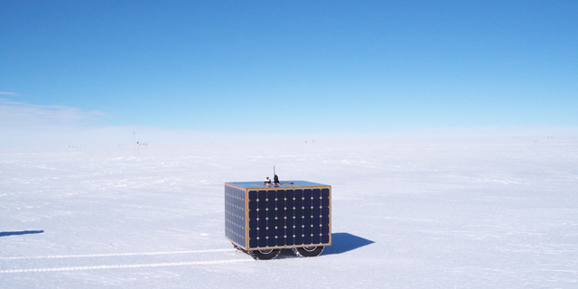

| |<< |< August 3, 2005 >| >>| | |
|
Another fine and productive day here on the Ice. Our motivation to get out and moving was all the greater for the fact that, after 8 straight days of overcast skies, the clouds finally parted to reveal clear blue sky all around us. The Wind and light snow of the past few days made interesting patterns in the snow surface - some places lightly ruffled, others smooth and bare, all swirled together. With abundant sunshine, we made our way out onto the now familiar track where we have been testing the GPS navigation for the past couple of days. The insolation was high: some 1000-1200 W/m^2, considerably higher than one would usually see in Hanover, NH. What's more, the snow all around provided insolation even to those panels not actually in the light. Using the power from the two panels that we have online, we drove ahead at full speed with the GPS navigation algorithm. At times, when the front panel was in shadow, we did not quite have all the power we needed to drive without drawing from the batteries. Towards the end of the loop, some 2.5 autonomous kilometers later, the front panel was facing towards the sun, and we faced a 100 W surplus of power! By this point, drawing towards lunchtime, clouds ringed the horizon a full 360 degrees. During lunch, the blanket we have become accustomed to dew back over us from the east, blotting out the sun once again. It was a nice couple of hours - I wish I had taken some pictures while we were out. Thankfully, Jim had the presence of mind to bring his camera out with us, so we do in fact have some record that the sun did indeed shine today. We now have achieved a rather momentous milestone. Each of the preceeding days, when we tried either the GPS system or the solar power system, there was some small glitch that cropped up right at the very end. Today, we drove the robot out of the garage via radio control, ramped up the solar power system as it was sitting there, had it enter into its autonomous navigation mode, follow a course of about a half dozen waypoints (see picture below), draw nearly all of its power from the solar power system (when it was driving towards the sun), reach the end of the navigation and stop, reenter into manual driving control, and be the last few hundred meters back to the garage, again drawing its power from the sun. The afternoon was spent analyzing the data from the morning's run (Jim) and preparing to bring the remaining panels online (me). Unfortunately, a couple of burnt MOSFETs kept us from getting back out quickly. By the time we were ready, we realized that the batteries were drained from an afternoon's worth of bench testing (after two days of light duty, when they were augmented by the solar panels, we didn't bother to charge them overnight). So, that shut us down for the rest of the day. Just as well, perhaps, the clouds were as thick as ever, and there were was a decent amount of wind, and even some flakes in the air - not a great way to end the day. So, as we have encountered pretty much every day since our arrival, some ups and downs, but we ended the day further up than down. This is doubly true, as the raising of the Big House has pushed on ahead these past few days. We now can reach it only by ascending a 10' ladder. We shall see what tomorrow holds. --Alex Streeter |
|
|  | |
| Blue skies at last! |
|
| |<< |< August 3, 2005 >| >>| |
| [Main] | [Mission] | [Design] | [Science] | [Papers] | [Pictures] | [Team] |
|
Last Updated on 10/20/2005 by Streeter
Site © Thayer School of Engineering, Dartmouth College, Hanover, N.H. |